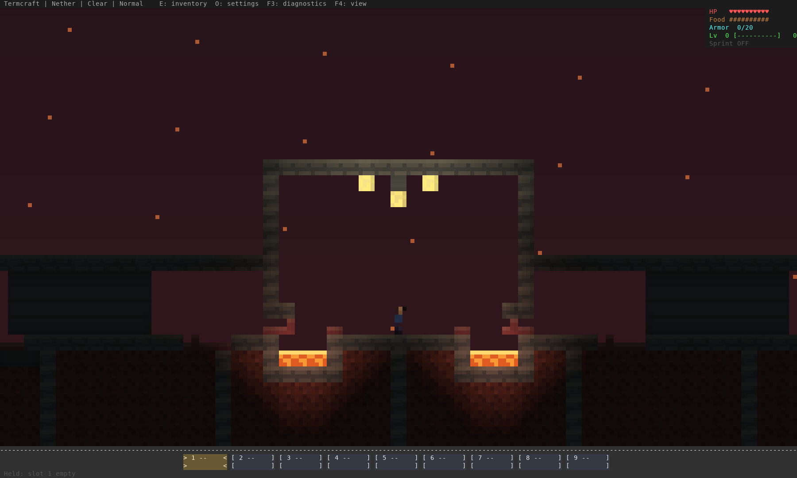
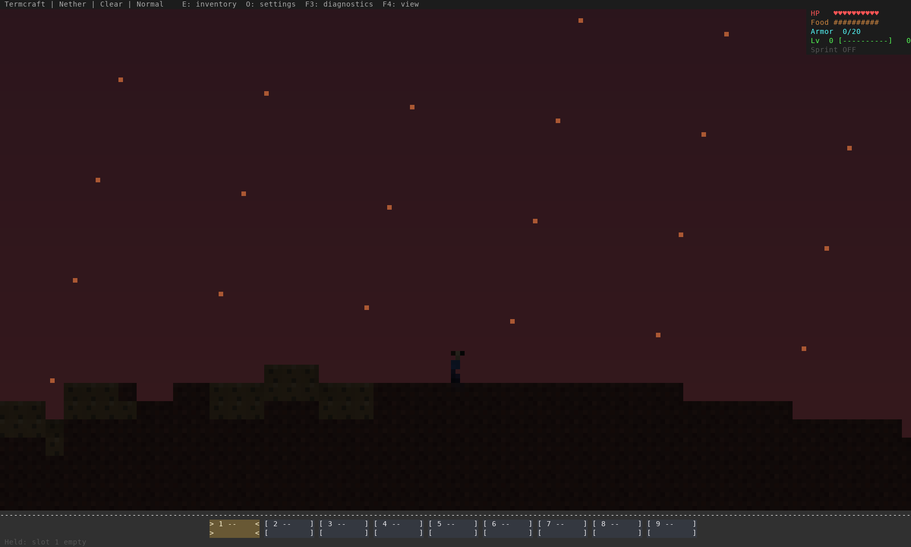
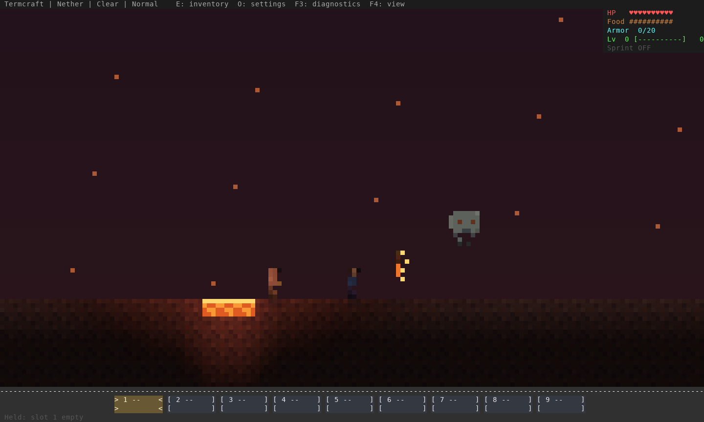

The current Nether
Fresh captures from the current game renderer. The fortress and cavern use generated terrain; the creature lineup is a separate staged scene. This preview shows the existing design, before a new Nether art pass. Click any image for full size.
Generated fortress
Seeded fortress gate at x=528.5. Lava braziers, glowstone, corridors and structural supports are generated by the game.

Generated cavern
Seeded terrain at x=0.5, with its current dark palette and ambient embers. Player position is staged; blocks are unmodified.

Current creatures
Separate staged lineup: zombie pigman on the left, player in the middle, blaze and ghast to the right. Normal gameplay overview scale.
